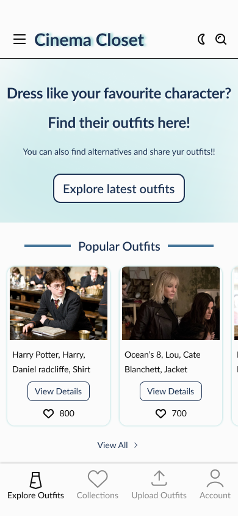
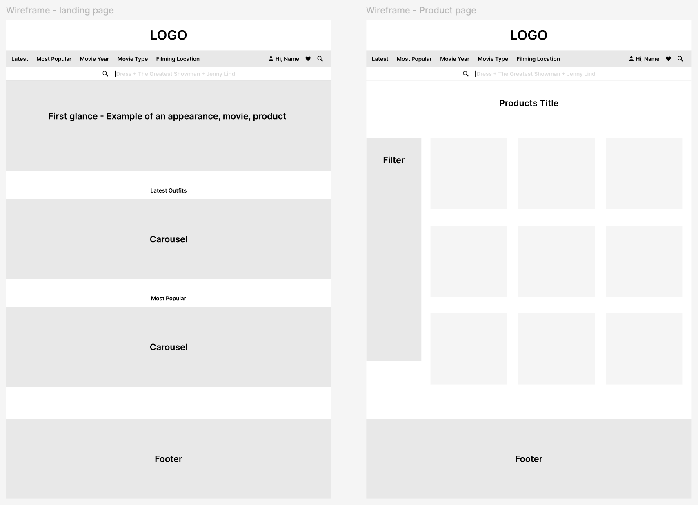
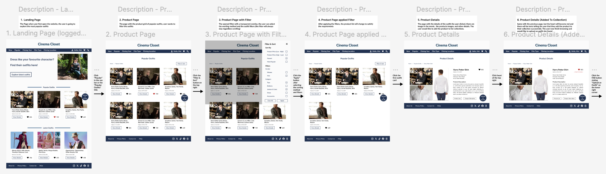
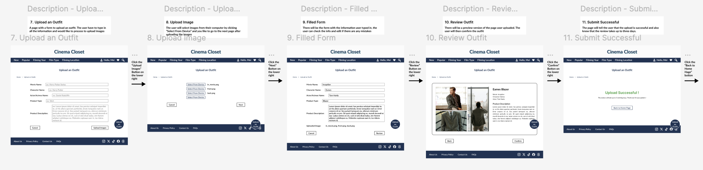
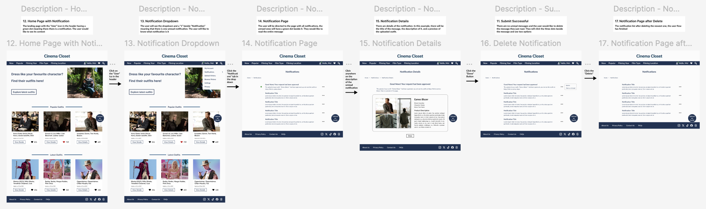

Overview

This is an app for audiences and fans to search the clothing that appears in movies by
many factors such as filming time, filming location, or actors. Furthermore, users can
share where to buy the outfits or any alternatives they find.
Our app aims to provide an easier way for users to find specific outfits. Besides the
general filters, users can search by uploading a photo of a scene. Furthermore,
users can save outfits to personal collections.
In this project, we’ve done competitor research, created a style tile,
developed ideas, and designed the prototype for both website and app versions.
Design Brief
There are mainly two target user groups for our platform:
- Primary audience: any person who watches a movie and is interested in the outfits
- Secondary audience: people who love fashion and/or are willing to share their clothing information.
Based on online research, their pain points and opportunities include
- I don’t know the movie name or the character, how do I find the outfit?
- Can I find clothing with a similar style?
- How can I have recommended outfits similar to my collections?
- How do I know the information is legit and accurate?
- The original products are too expensive, where can I get alternatives?
Competitor Research
In order to have clear but detailed selections of the sections on the main page, competitor research was conducted by using websites such as
Spotern and ShopYourTV.
After comparing these two websites' industry-standard UX design choices, strengths, and weaknesses,
I decided to use a navigation bar with more functions and provide recommendations as well as filters to the product lists.
Furthermore, the contents should be grouped by clear categories, and the patterns should be consistent.
Style Tile
In addition to following website design standards such as color ratio, design styles are essential
to let the user feel the style and the impression we want to give them. Here are the selections of our
design solutions and reasons:
-
Color: To let users feel comfortable and relaxed while using our website,
we chose to use blue as our main color. Furthermore, using different shades of blue can bring
harmony to the website, and it will also be consistent while changing from the light and dark modes.
-
Typefaces: To have a neat and modern atmosphere, we choose Lato, a sans serif typeface, for the website.
-
Images: To let users view the connection between the movie and the clothing,
we use the scene in the movie as the main image in the product card and the
outfit image will appear when viewing the product details.
-
Layout: To let the user browse the website without too much scrolling,
there is a carousel showing several outfits and a “view all” button under it
to see all of them in a product grid. And for the collections, the user has already seen
the outfits, so using a product list will be easier for them to find the one they are looking for.
Ideation & Wireframe
At the start point of designing the platform, the ideas of the contents on the landing and product page are:
-
Nav Bar - login, search, categories (user can search by year, type, filming location of the movie, and something like most popular or most recent
-
Drop Down Menu - avoid too much information, sometimes can use a mega menu
-
Clothing List - image of the appearance in the movie and the image of the actual clothing, texts include the movie name, character’s name, and the product name
-
Filters - on the right-hand side with clothing type (shirts, t-shirt, pants, ...) and accessories (jewelry, hats, glasses)

User Flow
After building the prototype with Figma and modifying the design with the feedback from user testing sessions,
here are the final interactive prototypes I designed. The user flow contains the most important tasks user should
be able to complete: find an item then add to collection, upload an outfit, and receive a notification.
Interactive Prototype
To find an item, the user can click the "most popular" tab in the navigation bar or the header on the main page,
apply the filter to make the search more precise, then click on the heart icon to save it to the collection.

Users can upload an outfit by clicking the action button, filling out the form, and then uploading it. There will be
a preview before the user submit the form, and also pop up message indicating if the upload is successful.

When having a notification, there will be a green dot beside the user icon in the navigation bar. After following the
flow, the list of messages will appear. The users also have the options to delete or unread it.

The Mobile Version has similar user flows with layouts that perform better on smaller screens.
Next Steps
To make the product better, we should get feedback from our users, take them into consideration,
and come up with new ideas. In addition, usability test sessions should be run to make sure our product
can be used by our users without unexpected errors or trials. These will all enhance users' experience while
exploring the outfits they are interested in.
Takeaways
Designing a platform from research and a prototype from sketch is a special experience for me. The main takeaways I gain from this project are:
-
It is important to consider users with all kinds of information they have and what they want. For example,
some people would like to search via the movie name, while others would like to upload a reference picture,
both types of users should have the same experience using the platform.
-
Final design might be vary different from the initial ideas. During the design process, ideas and challenges
will all come to face. As long as it can enhance users' experience, it can be applied to our product.
-
To ensure future development, such as porting to another device, is not difficult, a clear and reusable
design system in the design file with documentation beside is important.